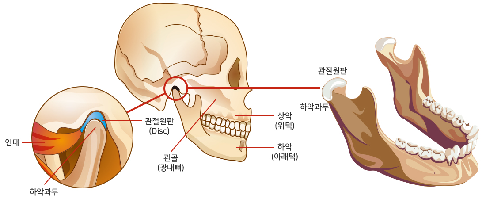
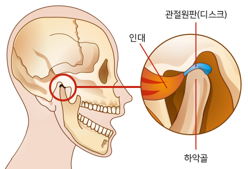
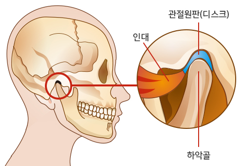
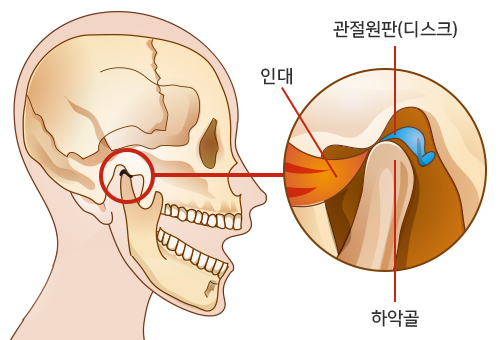
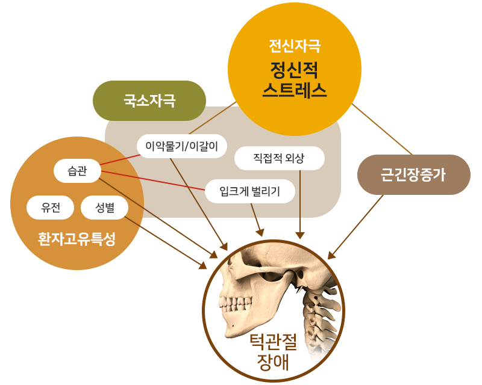
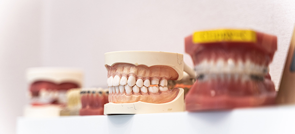
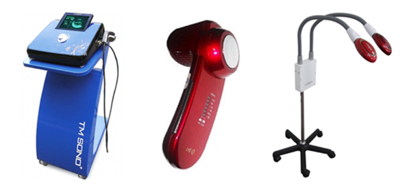
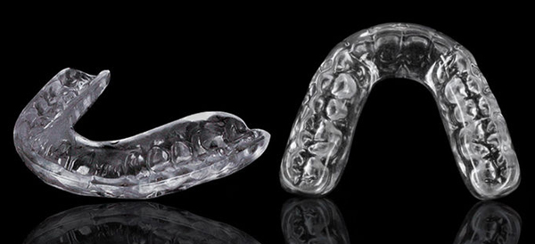

<%=m_client_en%>
턱관절이란 아래턱뼈와 머리뼈를 연결하는 귀 앞 부분에 있는 관절로
턱관절에 장애가 발생하게 되면 신체 전반의 균형을 깨트리게 할만큼 중요한 신체부위입니다.

턱 뼈 주변의 섬유성 조직인 디스크와 인대, 주변근육 등이 있어,
음식물을 씹거나 말하는 것과 같은 턱의 기능을 조절하는 역할을 하는데
턱관절 장애란 턱관절 및 주위 조직(근육, 인대 등)에 문제가 생겨,
통증 유발, 또는 턱의 기능적인 문제가 생기는 것을 말합니다.

턱을 쓰고 있을 때,
디스크는 턱뼈와 두개골 사이에 머물러 있습니다.

턱뼈는 씹거나 말하거나 삼킬 때 쿠션 역할을 하는
부드러운 디스크로부터 두개골과 분리되어 있습니다.

디스크는 턱뼈를 사용할 때 앞으로 당겨져 있고, 뼈에 갈립니다.
그러면서 고통을 유발하게 됩니다.
앞에 나와 있는 디스크는 입을 벌리는데
제한을 만들어 개구장애를 발생시킵니다.
턱관절장애가 생기는 원인은
교통사고나 외상, 류마티스 관절염같은 염증같은 직접적인 원인과 평소의 턱괴기,
한쪽으로만 음식물 씹기, 단단하거나 질긴 음식을 자주 섭취하는 등의 습관적인 원인이 될 수도 있습니다.

턱관절 치료에 있어서 수술은 최후의 수단입니다.
<%=m_client_name%>에서는 환자의 증상에 따라 한가지 또는 복합적인 치료계획을 수립하여
보존적이고 가역적인 치료방법을 우선적으로 시행하고 있습니다.

가장 기본이 되는 치료방법으로, 나쁜자세, 이갈이, 이악물기, 편측저작 등의 나쁜 악습관을 개선 교육, 턱관절, 턱근육을 이완하는 운동요법 교육을 실시합니다. 초기 환자분들은 일생생활에서의 악습관 개선만으로도 증상이 호전될 수 있습니다.
약물치료는 일반적으로 다른 치료법과 병행하여 실시하며
정확한 진단 후 적절한 투약요법을 시행합니다.

턱관절장애의 성공적인 치료를 위해 교합장치와 더불어 가장 많이 쓰이는 치료방법입니다. 턱관절과 경추의 운동성 및 기능을 회복 및 기능장애를 유발할 수 있는 자세를 교정 하고, 하악에 부착된 근육들을 신장시키거나 근력을 증가시키고 조정시킵니다.

증상에 따라 구강내 장착하는 스프린트를 이용하여
턱관절의 구조적 관계를 변화시켜 통증 및 기능장애를 개선합니다.